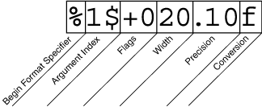

|
PrintWriter, a character stream class, and
PrintStream, a byte stream class.
PrintStream objects you are likely to need are
System.out
and
System.err. (See I/O from the Command Line for more on these
objects.) When you need to create a formatted output stream,
instantiate
PrintWriter, not PrintStream.
Like all byte and character stream objects, instances of
PrintStream and PrintWriter implement a
standard set of write methods for simple byte and
character output. In addition, both PrintStream and
PrintWriter implement the same set of methods for
converting internal data into formatted output. Two levels of
formatting are provided:
print and println format individual
values in a standard way.
format formats almost any number of values based
on a format string, with many options for precise formatting.
print and println Methodsprint or println outputs a single
value after converting the value using the appropriate
toString method. We can see this in the
Root
example:
public class Root {
public static void main(String[] args) {
int i = 2;
double r = Math.sqrt(i);
System.out.print("The square root of ");
System.out.print(i);
System.out.print(" is ");
System.out.print(r);
System.out.println(".");
i = 5;
r = Math.sqrt(i);
System.out.println("The square root of " + i + " is " + r + ".");
}
}
Root:
The square root of 2 is 1.4142135623730951. The square root of 5 is 2.23606797749979.
i and r variables are formatted twice:
the first time using code in an overload of print,
the second time by conversion code automatically generated by the Java
compiler, which also utilizes toString.
You can format any value this way,
but you don't have much control over the results.
format Methodformat method formats multiple arguments based on a
format string. The format string consists of static
text embedded with format specifiers; except for the format
specifiers, the format string is output unchanged.
Format strings support many features. In this tutorial, we'll just
cover some basics. For a complete description, see
format string syntax
in the API specification.
The
Root2
example formats two values with a single format
invocation:
public class Root2 {
public static void main(String[] args) {
int i = 2;
double r = Math.sqrt(i);
System.out.format("The square root of %d is %f.%n", i, r);
}
}
The square root of 2 is 1.414214.
% and end with a 1- or 2-character conversion
that specifies the kind of formatted output being generated. The three
conversions used here are:
d formats an integer value as a decimal value.
f formats a floating point value as a
decimal value.
n outputs a platform-specific line terminator.
x formats an integer as a hexadecimal value.
s formats any value as a string.
tB formats an integer as a locale-specific month
name.
%% and %n, all format specifiers
must match an argument. If they don't, an exception is thrown.
In the Java programming language, the \n escape always
generates the linefeed character (\u000A). Don't use
\n unless you specifically want a linefeed character. To
get the correct line separator for the local platform, use
%n.
Format,
that uses every possible kind of element.
public class Format {
public static void main(String[] args) {
System.out.format("%f, %1$+020.10f %n", Math.PI);
}
}
3.141593, +00000003.1415926536

Elements of a Format Specifier.
s and other
general conversions, this is the maximum width of the formatted
value; the value is right-truncated if necessary.Format example, the + flag specifies
that the number should always be formatted with a sign, and the
0 flag specifies that 0 is the padding
character. Other flags include - (pad on the right)
and , (format number with locale-specific thousands
separators). Note that some flags cannot be used with certain other
flags or with certain conversions.< to
match the same argument as the previous specifier. Thus the
example could have said:
System.out.format("%f, %<+020.10f %n", Math.PI);
|